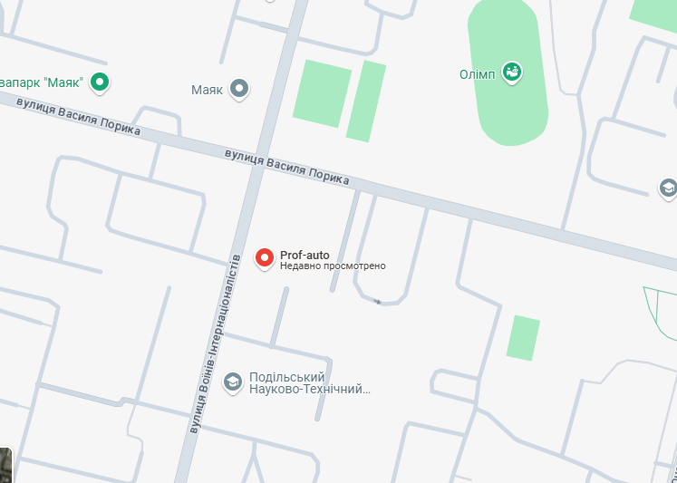

Про нас
Автошкола «Проф-Авто Політех» — це навчальний заклад, який пропонує курси з підготовки водіїв різних категорій. Вона готує водіїв на отримання прав на легкові автомобілі, мотоцикли та інші транспортні засоби. Автошкола надає теоретичні та практичні заняття, а також пропонує сучасний автопарк для тренувань.
Продукція/послуги
Теоретичні заняття — навчання основам правил дорожнього руху, безпеки на дорозі, а також інших важливих аспектів водіння.
Практичні заняття — водіння на різних типах транспортних засобів (легкові автомобілі, мотоцикли і т.д.). Заняття проходять з досвідченими інструкторами, які навчають правильному керуванню та безпеці.
Вивчення технічного обслуговування автомобіля — основи технічного обслуговування транспортних засобів, що може бути корисно для водіїв.
Підготовка до складання іспитів — як теоретичних, так і практичних. Підготовка допомагає впевнено скласти іспит у сервісному центрі.
Онлайн-заняття — можливість проходити теоретичні курси дистанційно, що дуже зручно для зайнятих людей.
Індивідуальні заняття — можливість отримати індивідуальні уроки водіння для більш гнучкого підходу до навчання.
Опціонально
Часто "Проф-Авто" орієнтується на індивідуальний підхід, гнучкий графік занять та підтримку учнів на всіх етапах навчання, включаючи підготовку до складання іспитів у ДІБДР. Автошколи такого формату також можуть надавати додаткові послуги, такі як онлайн-лекції, програми підвищення кваліфікації або консультації з відновлення навичок водіння.
